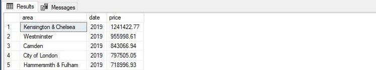
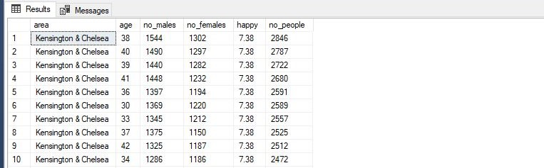
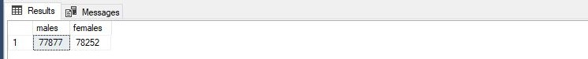
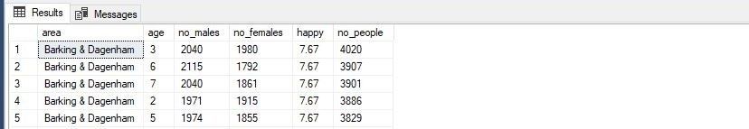
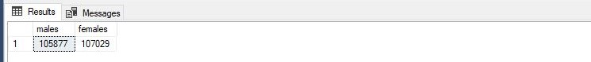
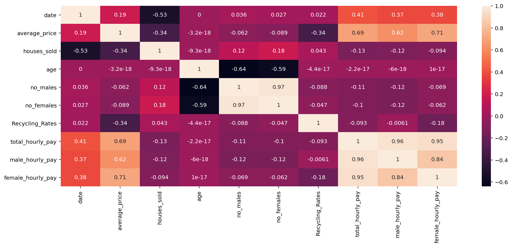
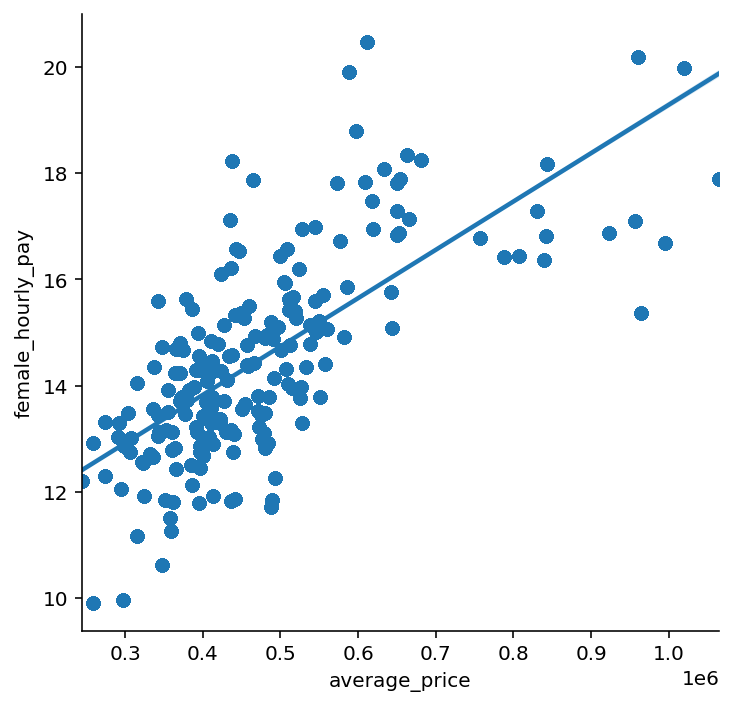
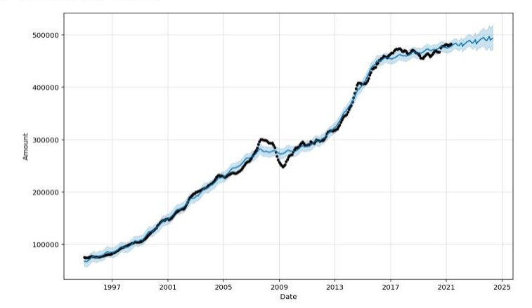
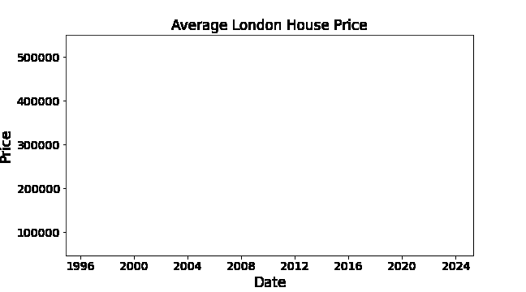

Findings
An investigation into London data using Data Analytics using Machine Learning, SQL, Power Query & Tableau
SQL: Exploratory data analysis
Looks like the wealthiest boroughs are Kensington & Chelsea, Westminster and Camden.
When we explore the data associated with the borough of Kensington & Chelsea, we see the relative equal number of males and females, 7.38 happiness, middle aged (35-41) & a low number of children.
It would therefore seem that most wealthy people therefore seem that the population was made up of middle-aged couples with possibly one child.
 It would also be of interest to look into the least wealthy brough, Barking & Dagenham. Relative equal number of males and females, 7.67 happiness, young aged (0-10), high number of children.
It seems logical to assume this area is made up of young parents/large families.
 Seaborn: Exploratory data analysis
From this analysis we can see that, as expected, the average price of houses has the highest correlation with hourly pay. In fact, the female hourly pay has the highest correlation with average house price.
We see that as we’d expect, as the wages increase, so do the house prices.
House prices tend to peak at the end of the year as expected due to prices increasing over time. However interestingly we also see house prices tend to drop in June each year followed by a rapid increase for the latter half of the year. As we’d expect the average prices increase over time.
Tableau Dashboard
- There is a decreasing trend in number of houses sold.
- The order of most densely populated broughs remains relatively constant.
- Westminster has the lowest female to male hourly pay gap with Richmond having the worst.
- The total London Population has increased by close to 1 million from 2014 to 2020.
- The highest house prices seem to lie upon a line into London from the South West.
- The more centrally placed boroughs have worse recycling rates.

PREDICTIONS (ML)
London house prices are expected to follow a steady increase to 2025.
The reasons for the movements in London house prices can be seen below.
Given the number of houses sold we can predict the average future house price within £15,282 using Random Forests. Our model explains 99.48% of the variance in house prices. However, given many more factors we were able to precisely predict London house prices to the pound!
Looking at just Kingston, I used a trained neural network to predict house prices for May 2023.
Our model is predicting
- Actual: May 2021 prices £504,304
- Forecast: May 2023 prices are expected to be £538,698
- Forecast increase: £34,394